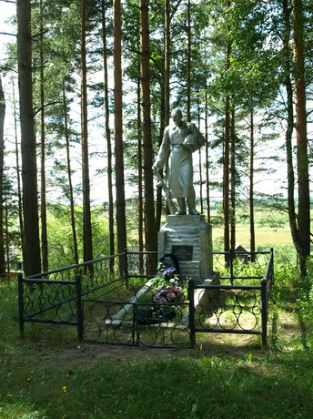

| 29 марта администрации Михайловского сельского поселения Калининского района были переданы материалы, содержащие сведения о воинах Красной Армии, погребенных в братской могиле в дер. Долматово.

В приложении к паспорту воинского захоронения № 69 - 178, дер. Долматово, Калининский район было учтено 58 захороненных. В том числе:
- офицеров - 9
- сержантов и старшин -3
- рядовых - 46
В ходе работы Фондом найдены документы, содержащие персональные сведения на 56 человек. Были установлены или исправлены личные данные захороненных:
- воинские звания – 4 чел.;
- фамилии - 6 чел.;
- отчества – 1 чел.;
- год рождения - 18 чел.;
- дата гибели/смерти - 4 чел.;
- последнее место службы - 51 чел.
- место гибели/первичного захоронения – 50 чел.
Установлено, что в братской могиле захоронены воины 5, 256, 243, 250, 174, 247, 179, 220, 391, 359, 185, 252 стрелковых дивизий, 114 стр. бригады, 10 мотострелковой бригады.
Погребенные в братской могиле погибли и умерли от полученных ранений в ходе боев за г. Калинин в октябре – декабре 1941 года.
В списке погребенных 8 чел., которые погибли в 1942г. под г. Ржевом в дер. Долманово и которые не могли быть погребены в этом воинском захоронении (выделены кр. цветом).
По результатам проделанной работы мы предложили администрации поселения
1. Дополнительно включить в список захороненных и увековечить на воинском мемориале имена 12 воинов.
2. Совместно с отделом военного комиссариата Тверской области по Калининскому району направить уведомления по месту рождения/призыва воинов с указанием места их захоронения. |